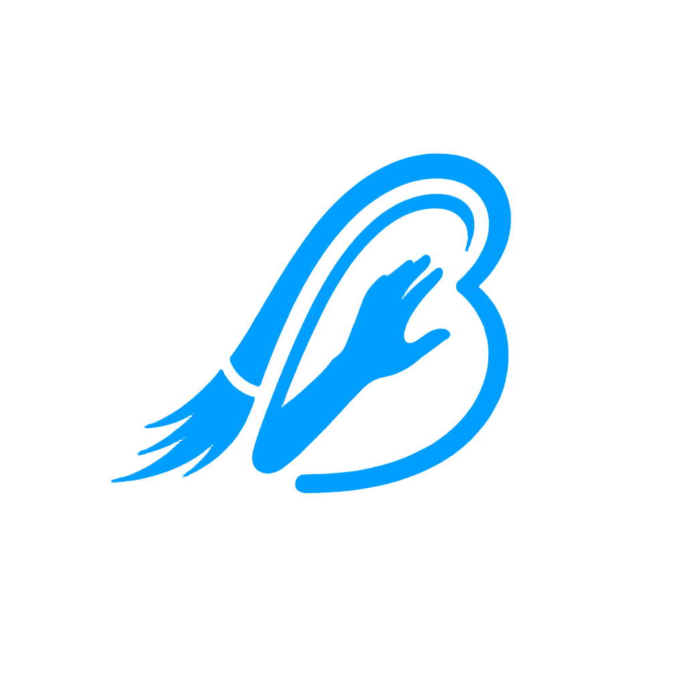
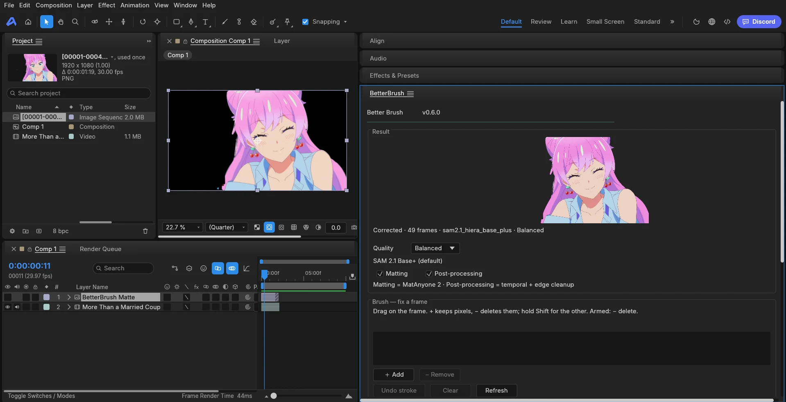

Point-prompt segmentation
Left-click to include, right-click to exclude. SAM 2 returns a mask for that frame in a fraction of a second — no box drawing, no lasso.

Better BrushDocs DownloadDocumentation · v1.0.0
Better Brush is a free, local-first AI rotoscoping studio for video editors. Click the subject once, let SAM 2 propagate a clean mask across the shot, refine the edges, and export production-ready alpha — all on your machine.
Left-click to include, right-click to exclude. SAM 2 returns a mask for that frame in a fraction of a second — no box drawing, no lasso.
Learned video matting (MatAnyone 2), guided-filter edge cleanup and optical-flow smoothing keep strand-level detail and motion blur.
Line lock snaps mattes to the pencil line, cel hold stops boiling on held drawings, and letterbox bars are detected on import.
02 — Quick start
Press or drag a video into the window. The timeline and preview load the first frame.
Left-click on the subject to include it, right-click outside it to exclude. One include point is usually enough.
Press Segment for the current frame, then Propagate to End to solve the rest of the shot. Watch the overlay as it tracks.
Press for the brush, paint a correction, and hold to erase. Use / to resize it.
Run the Matte QC Inspector (), fix what it flags, then press to export.
Download the Windows installer or portable zip, or build from source: sneg.dev/BetterBrush · github.com/SnegOwo/Better-Brush.
03 — Workflow
Better Brush treats rotoscoping as a point-and-correct loop rather than frame-by-frame labour:
04 — Mattes & refinement
MatAnyone 2 produces a true soft matte instead of a hard 0/255 edge, then a guided filter cleans the boundary without flattening it.
Optical-flow temporal smoothing keeps partial alpha stable from frame to frame, including motion blur and semi-transparent regions.
The colour-spill cleaner decontaminates edge pixels so the matte composites cleanly over any background plate.
Line lock rejects background line art and snaps the matte to the character's pencil line; cel hold removes frame-to-frame boiling on held drawings.
05 — Matte QC Inspector
Open with Inspect → Matte QC Inspector ().
| Evidence | What it detects |
|---|---|
| Hair/detail loss | Fine structures missing from the matte |
| Background spill | Background colour bleeding into the edge |
| Enclosed holes | Gaps inside the subject that should be filled |
| Edge flicker | Frame-to-frame instability at the boundary |
Reports use boolean evidence masks and never raise on empty or mismatched masks. Comparison reports use after-minus-before deltas — “improved” means lower severity.
06 — QC Coach
The QC Coach is a local, deterministic, offline assistant inside the inspector. It turns complaints into concrete settings.
Pick a common complaint or type your own — e.g. “the hair is too smooth”.
Get a direct explanation and a recommended setting change, prioritised from the current QC report.
Store the answer as a custom tip, or apply the suggested profile to the current shot in one click.
The matcher has explicit polarity: “too smooth” and “too sharp” require opposite settings and are never merged into one keyword bag. Answers and recent questions persist locally between sessions.
07 — Cleanup & repair
Beyond mattes, Better Brush ships two local cleanup paths:
08 — Performance Monitor
Open with Inspect → Performance Monitor (). When the platform exposes telemetry, you get live:
Better Brush reads your GPU and picks the strongest SAM 2.1 model that fits with headroom — CUDA, AMD/Intel DirectML, or CPU.
09 — Export
ProRes 4444 or QuickTime Animation (MOV) with soft, anti-aliased edges — drops straight into Premiere, Resolve or After Effects.
RGBA PNG sequences for compositors and VFX pipelines, with spill control and edge decontamination applied at render time.
Export H.264 MP4 over a vivid green, blue, magenta or custom background for editors without alpha support.
Exports go up to 8K, can mux the clip's original audio, and can be queued across several projects with the Batch Render Queue ().
10 — Shortcuts
| Action | Shortcut |
|---|---|
| Open video | |
| Export | |
| Batch render queue | |
| Point / Brush tool | |
| Play / pause | or |
| Previous / next frame | / |
| Brush size | / |
| Erase with brush | |
| Matte QC Inspector | |
| Shot Profiles | |
| Version History | |
| Performance Monitor | |
| Search these docs |
💡 Click any shortcut on this page to copy it.
11 — FAQ
Yes. Every feature is unlocked — no Lite/Pro split, no activation, no watermark, no account. The source is published under FSL-1.1-MIT: use, modify and share it, including for monetised YouTube, TikTok and AMV videos. You may not resell it or ship it inside a competing paid tool; the license becomes MIT on 2028-10-23. Some bundled model weights keep their own non-commercial terms — see the third-party notices.
No. Segmentation, matting, QC and cleanup all run locally. No account, no upload, no telemetry. The only network traffic is one-time model downloads.
An NVIDIA GPU is strongly recommended, but Better Brush also runs on AMD/Intel via DirectML and on CPU (much slower). It picks the strongest SAM 2.1 model that fits your VRAM with headroom.
Common edit-friendly video formats on import. On export: PNG sequence (RGBA), ProRes 4444 (MOV), QuickTime Animation (MOV) and H.264 (MP4, optionally over a chroma-key background), up to 8K.
Yes — as a beta. Select a footage layer, click Remove Background and the matte
is applied as a track matte; paint green/red on the result to fix a frame and re-run. Install from
source today (extensions\effectcraft\install.cmd); the portable build and one-file setup
arrive on Hugging Face between 2 and 8 November. It is tested on
effectcraft-0.17.0-windows-x64-portable only.
Yes. Both panels install separately and drive the same local engine: select a layer or clip, click Remove Background, and it is rotoscoped in place. Windows, AE 2022+ / Premiere Pro 2022+.
Paint a corrective stroke on the drifting frame and re-run. A brush stroke acts as a SAM 2 prompt, so only the affected area is re-solved.
Yes. The same footage, prompts and settings produce the same matte — essential for revisions and team handoffs.
Windows 10/11 (64-bit) is the supported release today. The source builds on Unix-like systems, but the packaged builds and Adobe panels are Windows-only for now.
Integrations · EffectCraft (beta)
Select a footage layer, click Remove Background, and the cut-out lands on the timeline as a track matte. Wrong frame? Paint it on the result image — green keeps pixels, red deletes them — then Apply fix & re-run re-tracks that frame with your strokes.

effectcraft-0.17.0-windows-x64-portable only
Portable + setup on Hugging Face, 2–8 November
git clone https://github.com/SnegOwo/Better-Brush.git
Double-click extensions\effectcraft\install.cmd. It finds the EffectCraft settings
folder, copies the panel and creates the bridge — pass
-SettingsDir "…\EffectCraftData" if you keep several installs.
The panel opens by itself. Turn on Preferences › Scripting & Expressions › Allow Scripts to Write Files and Access Network.
Select a footage layer → Remove Background → scrub to a bad frame → paint → Apply fix & re-run.
| Brush control | What it does |
|---|---|
| ＋ Add | Keeps pixels the matte cut away — paint the missing hair, arm or edge back in. |
| − Remove | Deletes pixels that should not be there. The stroke is drawn red over the frame as you paint. |
| Shift + drag | Uses the other tool for that one stroke. |
| Remove force 1–5 | How hard red bites: 1 is exactly what you painted, 5 grows a margin and erases it from every frame the matte still covers. |
| Apply fix & re-run | Re-tracks from this frame with your strokes and swaps the new frames into the existing matte — one Ctrl+Z. |
Beta notes. The panel, the brush and the background adapter work today, but this is a
young integration. It is tested on effectcraft-0.17.0-windows-x64-portable and nothing else:
EffectCraft 0.11.x cannot run panel timers, so there the panel only refreshes while the pointer is over
it. Strokes never touch the composition — there are no stray masks to clean up.
Roadmap. Portable build and one-file setup on Hugging Face between 2 and
8 November; until then, installing from source is the supported route. Bugs and oddities go to
GitHub issues — attach
panel.log and adapter.log. Full guide:
docs/EFFECTCRAFT.md.